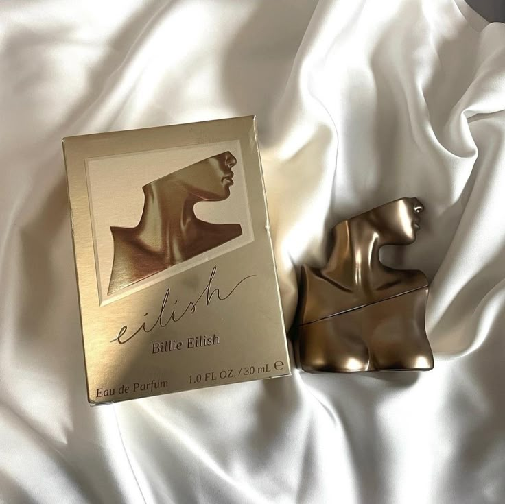
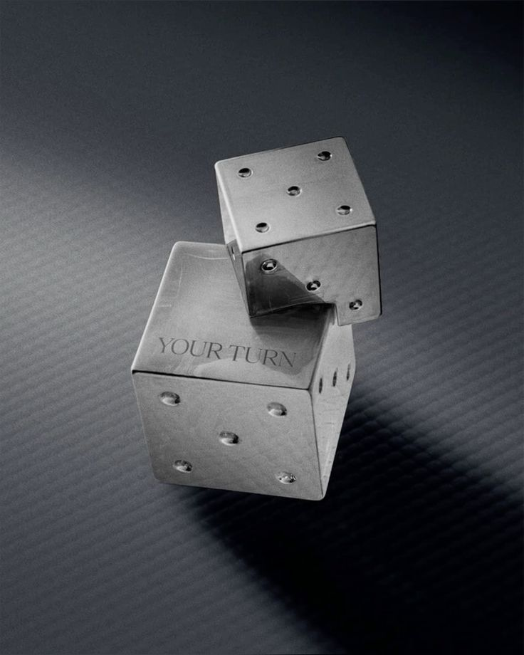

BOLETOS - CONCIERTOS BILLIE EILISH



.png)
Le cantautora batió dos récords Guinnes con su primer álbum de estudio. Actualmente, tiene más de 72.2 millones de seguidores en Instagram.
Al mes, las canciones de Billie Eilish en Spotify suman más de 54.8 millones de oyentes.
La popularidad de la estrella juvenil le ha permitido amasar un enorme patrimonio. Sus ingresos no se limitan a sus discos, conciertos y apariciones en eventos. También cuenta con algunos lucrativos negocios, entre ellos, su propia firma de moda.
Billie Eilish tenía solo 13 años cuando grabó el tema ‘Ocean Eyes’, escrito por su hermano Finneas. Con ayuda de su maestra de baile, la adolescente montó una coreografía e hizo un video musical.
El proyecto fue compartido a través de SoundCloud y YouTube en 2016. La canción se viralizó y recibió más de 170 millones de transmisiones en Spotify.
El tema fue certificado Platino por la Recording Industry Association of America (RIAA). Esto, le permitió llegar al puesto 84 en la lista Billboard Hot 100.
En 2016, Billie Eilish lanzó su sencillo ‘Six Feet Under’ y un año después ‘Don’t Smile at Me’ vio la luz. A partir de ese momento, el éxito de la adolescente fue imparable.
De acuerdo con la RIAA, Billie Eilish ha tenido ganancias de hasta 40 millones de dólares por su música digital. Esto la coloca por encima de estrellas como Cardi B, Sam Smith y otros.
Aunque la música es su mayor fuente de ingresos, la cantante ha amasado mucho dinero con otros proyectos.
Billie Eilish escribe canciones para películas, ofrece tours, conciertos y vende mucha mercancía. Pero eso no es todo. Billie Eilish también ha hecho comerciales promocionales para Adobe Creative Cloud. Además, ha hecho colaboraciones con marcas como Berhska.
Recientemente, la intérprete de ‘Lovely’ firmó un contrato de 25 millones de dólares con Apple. Se trata de un documental sobre su vida en el que probablemente abordará sus depresiones y el síndrome de Tourette que padece. Antes de eso, la firma ya la había convertido en el rostro de su campaña para promover la aplicación Music Lab.
En abril de 2019, la cantante lanzó una línea de ropa junto con el artista japonés Takashi Murakami. Él ha dirigido algunos de sus videos musicales.
En mayo de ese mismo año, Billie Eilish apareció en anuncios de Calvin Klein. Dos meses más tarde, se asoció con la firma Freak City para crear una nueva línea de ropa.
En general, 2019 fue uno de los mejores años de la carrera de la estrella y 2020 prometía no quedarse atrás. Sin embargo, no pudo llevar a cabo la gira mundial de presentación de su disco. De acuerdo con los expertos, eso le habría dejado mucho dinero más.
De acuerdo con Forbes, la cantante ganó más de 50 millones de dólares el año pasado.
Actualmente, Billie Eilish tiene un patrimonio estimado en 25 millones de dólares. Así lo dio a conocer Celebrity Net Worth.
Esta cifra es menos de la mitad de lo informado por Forbes, pero se trata del valor neto de la cantante. Es más de la mitad de lo que se estimaba hace un par de años, cuando se dijo que sumaba más de 8 millones de dólares.
Sin embargo, no es una sorpresa que la fortuna de la cantante vaya en aumento. En un solo día logra 1.8 millones de reproducciones en YouTube. Además, en el mismo periodo consigue 86 mil 300 nuevos suscriptores.
an solo por publicidad en dicha plataforma, Billie Eilish habría reunido más de 3.1 millones de dólares. Además, recibe regalías por sus participaciones en las pantallas chica y grande. Tal es el caso de la última película de la saga de X-Men y la serie de Netflix 13 Reasons Why.
También cobró una buena suma por la creación de su propia muñeca. Este proyecto estuvo a cargo de la empresa Playmates Toys and Bravado.
De acuerdo con medios especializados, la cantante gastaría más de 350 mil dólares solo en ropa.
Por los lujosos accesorios que la cantante porta puede gastar hasta 8 mil dólares. Nos referimos a los enormes collares y joyas que constantemente presume. Los anillos que complementan su look cuestan alrededor de 700 dólares.
Hablando del guardarropa de la estrella, es fan de las zapatillas deportivas. En particular, de las marcas Jordan y Nike. Por un par puede pagar de 900 a 2 mil dólares.
Billie Eilish gasta mucho en manicura para lucir sus uñas extralargas. En tintes para el cabello también se le va una buena cantidad de dinero. Aunque su melena verde-amarilla es la más popular, acostumbra lucir distintos tonos de pelo. Adicionalmente, la intérprete de ‘Bad Guy’ también derrocha su fortuna en maletas de viaje. En particular, de la marca alemana Rimowa, que vende sus productos hasta en 2 mil 100 dólares. La cantante tiene una colección de relojes, cuyos precios van de los 5 mil a los 40 mil dólares. Billie Eilish también tiene dos autos conocidos. Uno de ellos está valuado en 80 mil dólares, mientras que el segundo cuesta alrededor de 250 mil dólares.
© 2025 Mi Sitio Web. Ric. Alvarado Todos los derechos reservados.